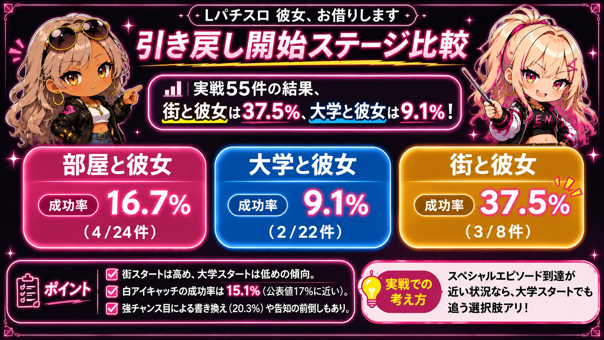

実戦データ検証｜Lパチスロ 彼女、お借りします
【実戦55件】引き戻し成功率は開始ステージで違う？ BIG後・REG後・アイキャッチを検証
「Lパチスロ 彼女、お借りします」の引き戻しでは、アイキャッチの色によって成功期待度が変わることが知られています。
公表解析ではあまり触れられていない、引き戻し開始ステージによる違いが実戦データから見えてきました。
実戦で記録した通常引き戻し55件を使い、BIG後・REG後、開始ステージ、アイキャッチの3つの要素から比較しました。
今回の実戦では、「街と彼女」開始が8件中3件成功（37.5%）、「大学と彼女」は22件中2件成功（9.1%）という結果でした。

調査対象
今回の比較は、通常の引き戻しを対象にしています。ユメトカノジョは対象外。通常のエピソードBONUS後はBIG後に含めています。開始時のアイキャッチとステージを記録し、引き戻し中にBONUSへ当選すれば成功としました。
1. BIG後とREG後の引き戻し成功率
| 直前のBONUS | 成功 | 失敗 | 成功率 |
|---|---|---|---|
| BIG後（通常EP含む） | 6 | 35 | 14.6% |
| REG後 | 4 | 10 | 28.6% |
| 合計 | 10 | 45 | 18.2% |
今回の実戦ではREG後のほうが高くなりました。REG後は14件と少ないため、優遇の有無は引き続き参考程度に考えたいところです。
2. 引き戻し開始ステージ別の成功率
| 開始ステージ | BIG後 | REG後 | 合計 |
|---|---|---|---|
| 部屋と彼女 | 2/18（11.1%） | 2/6（33.3%） | 4/24（16.7%） |
| 大学と彼女 | 1/15（6.7%） | 1/7（14.3%） | 2/22（9.1%） |
| 街と彼女 | 2/7（28.6%） | 1/1（100%） | 3/8（37.5%） |
今回の結果では、街スタートは高め、大学スタートは低めでした。
特に街は8件、REG後の街は1件だけなので、サンプル数による偏りには注意が必要です。
※ステージ別の表は、開始ステージを確認できた54件を対象としています。
3. 引き戻し開始時のアイキャッチ別
| アイキャッチ | BIG後 | REG後 |
|---|---|---|
| 白 | 6/41（14.6%） | 2/12（16.7%） |
| ピンク・赤 | 該当なし | 2/2（100%） |
| 黒 | 該当なし | 該当なし |
白の引き戻し成功率は全体で8/53件（15.1%）。公表されている白アイキャッチの引き戻し期待度17%に近い結果でした。
4. アイキャッチ×開始ステージの組み合わせ
| 開始条件 | BIG後 | REG後 |
|---|---|---|
| 白×部屋と彼女 | 2/18（11.1%） | 1/5（20.0%） |
| 白×大学と彼女 | 1/15（6.7%） | 0/6（0%） |
| 白×街と彼女 | 2/7（28.6%） | 1/1（100%） |
| ピンク・赤×部屋と彼女 | 該当なし | 1/1 |
| ピンク・赤×大学と彼女 | 該当なし | 1/1 |
白アイキャッチだけをBIG後とREG後で合わせると、部屋3/23（13.0%）、大学1/21（4.8%）、街3/8（37.5%）でした。
5. 強チャンス目からの引き戻しは「書き換え」だけ？
BIG後の「白×街」で成功した2件は、いずれも引き戻し中に強チャンス目を記録していました。
ただし、強チャンス目を引かなければ引き戻さなかった、とは限りません。
解析によると、引き戻し非当選時には強チャンス目で20.3%の成功書き換え抽選が行われます。一方、すでに内部的に引き戻しに当選している場合は、レア役で告知の前倒し抽選が行われます。
つまり、強チャンス目の直後に成功した場合でも、新たに書き換え当選したのか、元々予定されていた当選が早く告知されたのかは、実戦記録だけでは区別できません。
実戦では「夜と彼女」ステージ中に強チャンス目を引き、連続演出の前に引き戻した経験もあります。体感では内部当選に期待できる状況でしたが、確定かどうかは未確認です。
まとめ｜開始ステージも判断材料の一つ
今回の実戦では、街と彼女スタートの成功率が高く、大学と彼女スタートは低い結果でした。白アイキャッチの成功率も公表値に近い数字になっています。
とはいえ、引き戻し中にはレア役による成功書き換えや告知の前倒しもあるため、開始ステージだけでヤメ時を決めるのは早そうです。
また、ヒロイン攻略が進み、スペシャルエピソード到達が近い状況なら、大学スタートでも引き戻しを追う選択肢はあるかもしれません。
今回の結果は、ステージ・アイキャッチ・レア役の3つを組み合わせ、そのときの状況に応じて判断するための参考データとして活用してください。
参考解析
※記事内の成功率は実戦記録から集計した観測値であり、メーカー公表のステージ別当選確率や収支期待値を示すものではありません。